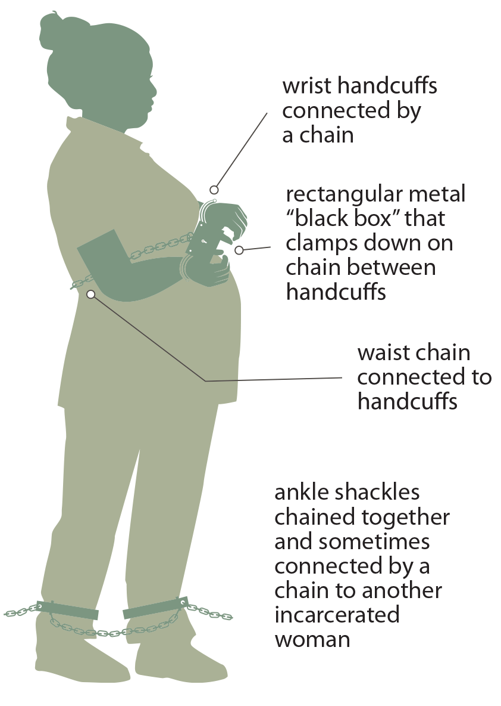

Imagine navigating pregnancy with limited medical care, heightened stress, and a loss of autonomy—this is sadly the reality for many incarcerated pregnant women in the U.S., a group often forgotten in discussions of maternal health. Despite constant advances in various healthcare frields, the maternal health crisis is stark behind bars, particularly due to many reasons such as lack of sufficient care, systemic inequities within the jails, and many more. Around 58,000 pregnant women are incarcerated every year, and most are forcibly separated from even the idea of motherhood.
Approximately 4% of incarcerated individuals in state prisons nationwide report being pregnant at admission, but the quality of care varies significantly across facilities. For some, an initial obstetric exam may be the extent of prenatal care throughout the entire duration of their pregnancy. But others may benefit from frequent and thorough visits to hospitals, or even access to doulas. These inconsistencies, however, highlight a larger issue: the lack of standardized, comprehensive maternal healthcare within the prison system. Only a small fraction of facilities provide nursery programs, where some mothers can live with their newborns—a resource shown to improve outcomes for both parties. However, these programs are rare and oftentimes underfunded.
The effects of paternal incarceration compared to maternal incarceration is also vastly different. In the cases of children where their father is in prison, the mother is the primary caregiver of the child; but when a mother is incarcerated, that care is usually transferred to the grandparents (usually the grandmother), or in other cases they are cared for by extended family members, usually out of their home state. This usually has extensive psychological and emotional impacts on the children, especially considering the emotional regulation that mothers control when they are younger.
The maternal mortality problem disproportionately impacts marginalized communities, including Black and Brown women, who are overrepresented in the incarcerated population. For many, prison exacerbates existing health inequities. Black and Brown women are disproportionately incarcerated compared to their white counterparts. Black women, for example, are incarcerated at nearly twice the rate of white women, and this disparity extends to their experiences during pregnancy in prison.
Black women in the U.S. are already three to four times more likely than white women to die from pregnancy-related complications, a disparity driven by systemic racism in healthcare. These risks increase in carceral settings, where medical neglect and inadequate prenatal care are more common. Many incarcerated Black women report feeling unheard or dismissed by prison healthcare providers, especially when it comes to contacting their children as well as spending time with them.
The mental health of pregnant incarcerated women is often overlooked. Incarceration itself is a stressful experience, marked by isolation, strict schedules, and limited autonomy. For pregnant women, this environment can exacerbate anxiety, depression, and stress, all of which can negatively impact pregnancy outcomes. These women also face the trauma of giving birth in prison, often under shackling policies, which means that they are literally shackled to the bed with cuffs when going through medical procedures (which even includes labor).
Many women also struggle with connecting with their child after their pregnancy as well, in which there are many instances. For example, when the relationship between a mother and her child’s caregiver is somehow damaged, it often results in the mother not being able to see the child for extended periods of time. Also, many mothers struggled with solely communicating over the phone with their children, and not being able to see facial expressions or hand gestures; often not willing to subject them to the potentially stressful environment of prison. As a result, even after they were released from prison, many women struggled with emotionally connecting with their children. Many did not even know their kid’s favorite color, movie, or food.
A significant barrier to addressing this crisis is the lack of accessibility to standardized data. The U.S. Department of Justice does not regularly collect detailed statistics on pregnant incarcerated women, making it difficult to measure the scope of the problem or track outcomes. The most recent data available are often outdated and incomplete, which can lead to failures in capturing critical information such as any disparities (racial or otherwise), pregnancy complications, and maternal mortality rates.
Despite these challenges, there are some programs that offer hope. For instance, the Moms & Babies initiative at Decatur Correctional Center in Illinois allows incarcerated mothers to care for their newborns for up to two years. This is a huge step towards fostering maternal bonds and overall improving the mental and physical outcomes for both mom and child. However, these programs make up only part of the solution, not the entire thing.
This rising problem concerning incarcerated mothers raises one question for us to answer: do alleged “criminals” deserve to partake in motherhood? Controversially, my answer is yes. No matter what, the failures in the prison system are coming to light through this dilemma. Addressing it not only requires policy revisions and interventions, but also a change in how our society views imprisoned individuals. Pregnant women in prison are not disposable—they are people, human beings, deserving of dignity, care, and the opportunity to be a mother.